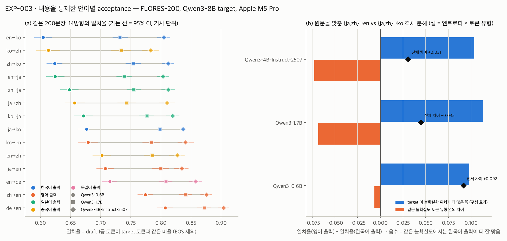
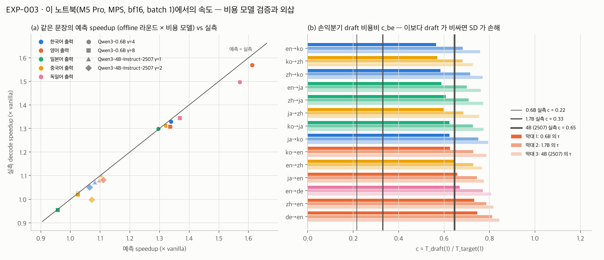

ENC Lab · [온디바이스AI-3팀] 연구 로그
| ID | 가설 (한 줄) | 상태 | 최근 갱신 |
|---|---|---|---|
| H1 | 같은 동양권인 일본어, 중국어에서는 acceptance rate가 크게 떨어지며 그 감소폭은 draft-target 어휘 커버리지로 예측되고 연산 제약이 강해질수록 증폭되는데 한국어에서도 발생할 것이다. (문장 수정 안건 — 아래) | 설계 중 → 검증 중 | W03 |
| H2 | 노트북(M5 Pro)에서 SD 역전 γ는 실측 α·c를 넣은 Leviathan 식 예측과 γ 격자 한 칸 이내로 일치한다. | 검증 중 | W03 |
| 한 줄 요약 | 같은 FLORES-200 200문장을 14방향으로 번역시키니 0.6B draft에서 한국어 출력의 일치율이 최저권이었다 (en→ko 0.605, 같은 원문 en→de 0.715, 차이 −0.110 [−0.126, −0.095]). 1.7B·4B draft에서는 한국어 출력이 일본어 출력과 구별되지 않는다. 실측 speedup(γ=4, 0.6B)은 한·일·중 출력이 1.30~1.33×로 비슷하고 영어 출력 1.57×보다 낮다. 원문을 맞춘 영어−한국어 출력 격차는 target이 거의 확신하는 자리의 비율 차이(74% vs 50%)에 몰려 있다 — 원인이 아니라 위치다. |
|---|
| 상태 | 설계 중 → 검증 중 (처음으로 내용을 통제한 측정) | ||||||||||||||||||||||||||||||
|---|---|---|---|---|---|---|---|---|---|---|---|---|---|---|---|---|---|---|---|---|---|---|---|---|---|---|---|---|---|---|---|
| 경쟁 설명 |
| ||||||||||||||||||||||||||||||
| 이번 주 | FLORES-200 devtest 200문장(150개 기사) × 14방향, Qwen3-8B target, greedy, CI = 기사 단위 부트스트랩. 실측 speedup은 방향마다 12문장 계획(드리프트 제외 후 8~12문장, 합계 155 run), M5 Pro·MPS·bf16·batch 1, 출력 언어별 평균. 진 조건부터.
en→ko는 0.6B 점추정 최저지만 ko→zh와는 차이가 없다(−0.009 [−0.029, +0.013]). 1.7B에서 en→ko − en→ja는 −0.007 [−0.019, +0.005]. | ||||||||||||||||||||||||||||||
| Figure |  | ||||||||||||||||||||||||||||||
| 해석 | 0.6B에서 한국어 출력이 낮은 것은 같은 확신도·토큰 유형 안에서 draft가 한국어를 더 못 맞혀서가 아니다. 격차는 target이 확신하는 자리가 적은 쪽에 몰려 있다. target의 토큰당 놀람(−log p)이 한국어 출력에서 2.1~2.7배다. 이 분해는 격차의 위치를 보여 줄 뿐, target 확신도가 원인이라는 증거는 아니다. 한국어가 본래 예측하기 어려운지 Qwen이 한국어를 덜 잘하는지도 같은 계열 모델로는 가를 수 없다. draft·target이 같은 어휘라 커버리지는 100%로 고정이다. 그래서 H1의 "커버리지로 예측"은 이번 실험으로 시험되지 않았다. 다른 계열 후보 토크나이저는 언어 간 폭이 넓어(EXAONE의 Qwen 출력 커버리지 ko 92% vs zh 29%) 다른 계열 draft 하나로 시험할 수 있다. 한국어 고유로 보이는 손실은 띄어쓰기 뒤 음절을 바이트로 쪼갠 자리지만, 일치율로 0.6B 약 0.008로 작다. draft 크기를 바꾸면 이렇다. 0.6B → 1.7B → 4B(2507)로 바꾸면 영어−한국어 출력 격차가 logit으로 0.432 → 0.276 → 0.228로 준다 (P6 지지). 4B(2507)에서는 ko→zh가 단독 최저다 (en→ko보다 −0.022 [−0.037, −0.007]). 그러나 4B에서는 중국어 출력 효과가 가장 낮고 ko→ja가 en→ja보다 높아서, "한국어를 읽기"가 원인이라고는 아직 말할 수 없다. 원문 쪽 차이(0.6B ko→en이 zh→en보다 0.095, ja→en보다 0.028 낮음)도 출력 언어마다 순서가 달라 원문·출력 짝의 문제로 보인다 (탐색적). H1의 "연산 제약이 강해질수록 증폭"은 c만 바꾼 외삽에서 비율로는 성립하지 않았다. 각자 최고 γ에서 영어/한국어 출력 속도 비가 c가 커질수록 1.23 → 1.06으로 준다 (0.6B). 손익분기 c_be는 γ=1 일치율 순서를 다시 쓴 것이고(c_be = τ(1) − r(2)), 1.7B·4B에서는 ko→zh가 먼저 닿는다. 그래서 대체 문장은 미팅에서 정한다. | ||||||||||||||||||||||||||||||
| 미보고 |
| ||||||||||||||||||||||||||||||
| 논문 매핑 | K1의 X→En 비교를 출력 언어 쪽으로 확장 / Fig. 후보 — 14방향 일치율 + 격차 분해 |
| 상태 | 검증 중 (유지). 역전 γ는 이번에 재지 않았다 (실측은 0.6B γ=4·8, 4B γ=1·2). 같은 run에서 뽑은 c로 speedup 예측은 출력 언어별 0.075 안에서 맞았다. |
|---|---|
| 경쟁 설명 |
|
| 이번 주 |
|
| Figure |  |
| 해석 | W02의 비용 모델 τ·T_t(1)/(γ·T_d + T_t(γ+1))은 문장 길이·언어가 다른 입력에서도, draft가 다른 c 0.65에서도 같은 run의 c를 넣으면 맞는다. 그래서 언어별 속도 차이를 τ 차이로 옮겨 말할 수 있다. 4B는 α가 높아도(γ=1 0.87) c가 0.65라 실측 1.06~1.08×로 0.6B(γ=4 1.40×)보다 낮다. "draft를 키워 α를 올리는 것은 이 노트북에서 손해"라는 W02 관찰과 같은 방향이다 (draft 비용을 줄이는 쪽은 이번에 재지 않았다). |
| 미보고 |
|
| 논문 매핑 | Leviathan (ICML 2023) 속도 식 + 검증 비용 곡선 / Fig. 후보 — 같은 문장 예측 vs 실측 |
| 미팅 결정사항 | 미팅 중 입력. |
|---|---|
| 선행연구 · 막힌 것 |
|